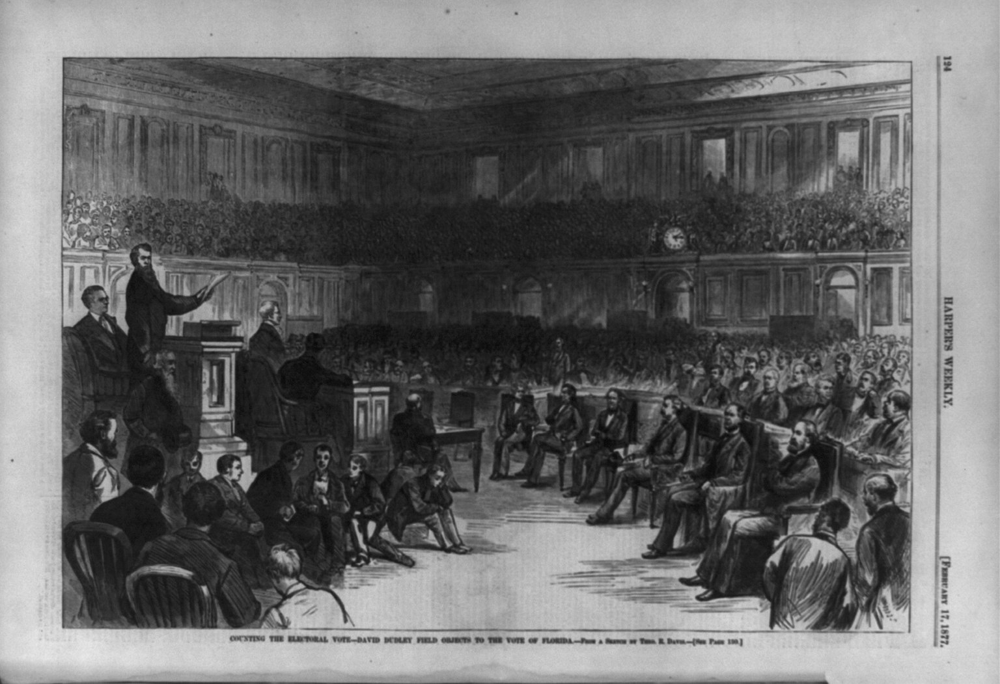

Directions: Read the full text, then answer the questions at the end.
In November 1876 the country voted for president. The Republicans nominated Rutherford B. Hayes, Ohio's governor and a Union general. The Democrats nominated Samuel J. Tilden, New York's governor, famous for prosecuting the Tweed Ring. In the South the campaign ran on the ground this unit has covered, where Democratic organizations had spent the decade taking state governments back by fraud, economic pressure, and violence.
Tilden won the popular vote by a margin of some quarter of a million votes. He stood one electoral vote short of a majority. Hayes claimed disputed returns in four states, Florida, Louisiana, South Carolina, and one elector in Oregon, twenty electoral votes in all. Each disputed state sent rival returns to Washington, and whoever received those twenty votes would be president.
The dispute had been visible before the counting began. In October 1876 Harper's Weekly printed A. B. Frost's drawing of a Black voter at a southern polling place with pistols at his head, ordered to say he wanted to vote the Democratic ticket. Where terror and fraud had already driven Black voters from the polls, Democratic majorities were being manufactured, and the national count would rest on returns from states whose elections had not been free.
Florida, Louisiana, and South Carolina were the last southern states still holding Republican governments, and those governments survived behind the protection of federal troops stationed at their capitals. Their election boards, Republican controlled, threw out Democratic returns from counties where intimidation was charged and certified Hayes electors. Democratic boards answered with Tilden certificates of their own. Oregon's dispute turned on one elector's eligibility, but counted the same.
Congress had no settled way to count rival returns, and the House was Democratic while the Senate was Republican, so neither party would trust the other to decide. In January 1877 Congress created a body to rule on the disputed votes. Its fifteen members were five senators, five representatives, and five justices of the Supreme Court. The design expected Justice David Davis to hold the balance. Illinois then elected Davis to the Senate, and another justice took his seat.
The commission heard the cases state by state through February. On every disputed question it ruled for Hayes by eight votes to seven, the Republican members against the Democratic members, down the same line each time. Florida, Louisiana, South Carolina, and Oregon all went to Hayes. The electoral count stood at 185 to 184, a majority of one vote, and the result was proclaimed in the first days of March, two days before the inauguration.

A ruling is not an acceptance, and Democratic representatives threatened to delay the count past inauguration day. Through February, in meetings at Wormley House, Hayes's allies and southern Democratic leaders reached the understanding that ended the crisis. The Democrats would let the count finish and Hayes take office. In return they received assurances that Hayes would name a southerner to his cabinet, would support federal aid for southern internal improvements, and would withdraw the federal troops guarding the Republican governments of South Carolina and Louisiana.
Hayes took the oath in March and made the bargain's first payment, naming David M. Key of Tennessee postmaster general. On March 5 he delivered his inaugural address, the bargain's public face. In it, as a teaching summary states its substance, he pledged the complete protection of all citizens in their constitutional rights and promised honest and efficient local self government for the southern states, declaring the interests of white and colored people to be regarded both and equally.
In April 1877 Hayes ordered the troops withdrawn. The soldiers stationed at the statehouse in Columbia, South Carolina, were sent back to their barracks, and South Carolina's Republican governor, Daniel Henry Chamberlain, gave up his office to the Democratic claimant, Wade Hampton. Days later the troops at New Orleans were withdrawn as well, and Louisiana's Republican government fell. The last two Reconstruction governments ended without a battle, ended by an order.
With the troops gone, the Redeemers held every southern state. They called their return Redemption and their rule home rule, and governed for low taxes, cheap government, and retrenched schools, in states where Black men still held the vote in law and had lost the protection that had made voting possible.
Read against the unit's documents, the settled side of the account stands in constitutional text. The Thirteenth Amendment had abolished slavery and involuntary servitude everywhere in the United States, and armed Congress to enforce the abolition. The Fourteenth Amendment had defined citizenship by birth and forbidden any state to deny due process or the equal protection of the laws. The Fifteenth Amendment protected the vote against denial on account of race, color, or previous condition of servitude. No ordinary law could repeal them, and the settlement of 1877 did not.
The open side of the account stands in the unit's other documents. Land had never been redistributed. The schools and governments freedpeople built stood under rulers pledged against them. And the amendments' enforcement, a decade's work of marshals, supervisors, and troops, was stood down in a single spring. What later generations would do with the sentences left standing in the Constitution, this lesson does not teach. It closes where the survey's first half closes, on the distance between what the law had settled and what the country's will would hold.
1. State the popular vote result of 1876 and the electoral position it left, naming Tilden's margin, how far he stood from a majority, and how many electoral votes the disputed returns held.
2. State what Frost's October 1876 drawing showed, and state why the national count rested on returns from elections the reading calls not free.
3. State how the Electoral Commission was made up, and state its ruling pattern and the final electoral count.
4. State the three assurances the southern Democratic leaders received in the bargain of 1877, and state the first payment Hayes made on taking office.
5. Answer in a short paragraph. The lesson question asks what Reconstruction settled and what its ending left open. Give the strongest answer the reading supports, using one item from the settled account and one from the open account as evidence.
1. State the popular vote result, and the electoral position. Samuel J. Tilden won the popular vote by a margin of some quarter of a million votes. He stood one electoral vote short of a majority. The disputed returns, from Florida, Louisiana, South Carolina, and one elector in Oregon, held twenty electoral votes, and whoever received them would be president.
2. State what Frost's drawing showed, and why the count rested on unfree elections. A. B. Frost's drawing in Harper's Weekly, October 1876, showed a Black voter at a southern polling place with pistols at his head, ordered to say he wanted to vote the Democratic ticket. Where terror and fraud had driven Black voters from the polls, Democratic majorities were manufactured, so the national count rested on returns from Florida, Louisiana, and South Carolina, states whose Republican governments survived behind federal troops and whose elections had not been free.
3. State the commission's makeup, pattern, and count. The Electoral Commission had fifteen members, five senators, five representatives, and five justices of the Supreme Court. It ruled for Hayes on every disputed question by eight votes to seven, the Republican members against the Democratic members. Florida, Louisiana, South Carolina, and Oregon all went to Hayes, and the electoral count stood at 185 to 184.
4. State the three assurances, and the first payment. The southern Democratic leaders received assurances that Hayes would name a southerner to his cabinet, would support federal aid for southern internal improvements, and would withdraw the federal troops guarding the Republican governments of South Carolina and Louisiana. On taking office Hayes named David M. Key of Tennessee postmaster general.
5. What did Reconstruction settle, and what did its ending leave open? Full credit answers hold both columns. Settled, in constitutional text no ordinary law could repeal: slavery and involuntary servitude abolished by the Thirteenth Amendment, citizenship defined by birth and due process and equal protection guaranteed against the states by the Fourteenth, and the vote protected against denial on account of race, color, or previous condition of servitude by the Fifteenth (any one item accurately stated earns the settled half). Left open: land was never redistributed, the schools and governments freedpeople built stood under rulers pledged against them, and the amendments' enforcement was stood down in the spring of 1877 when the last troops withdrew (any one item earns the open half). An answer giving only one column earns partial credit.